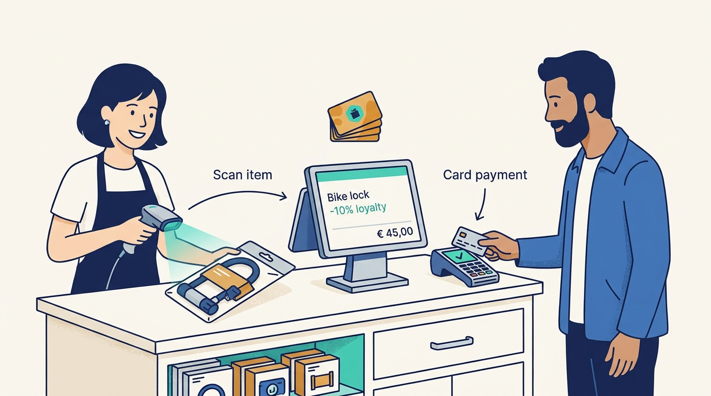
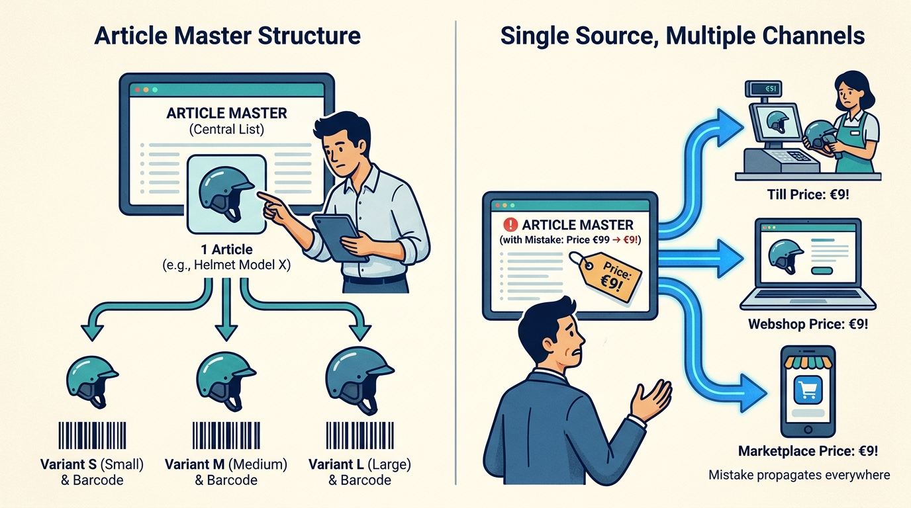
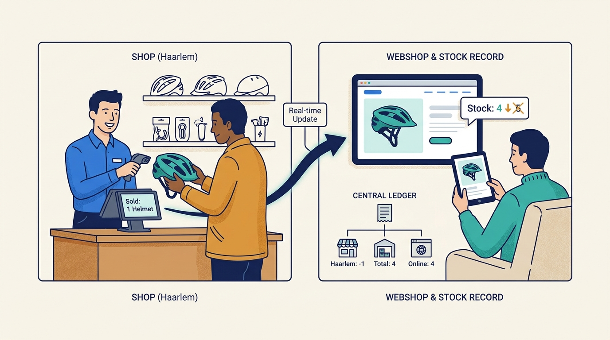
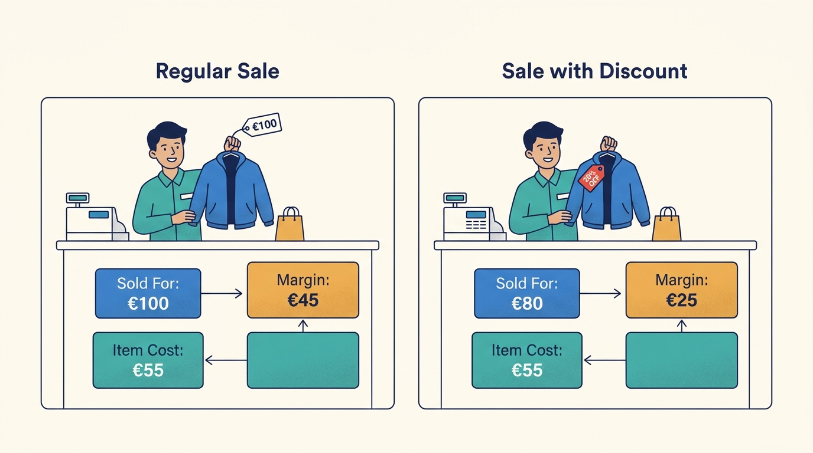
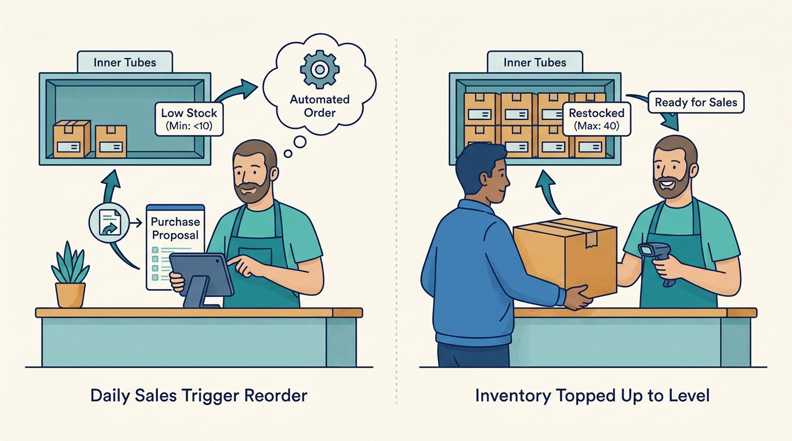
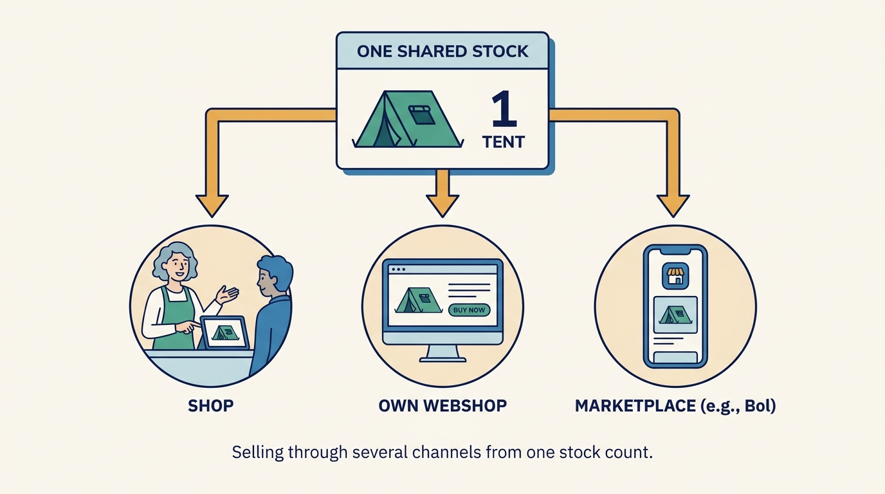
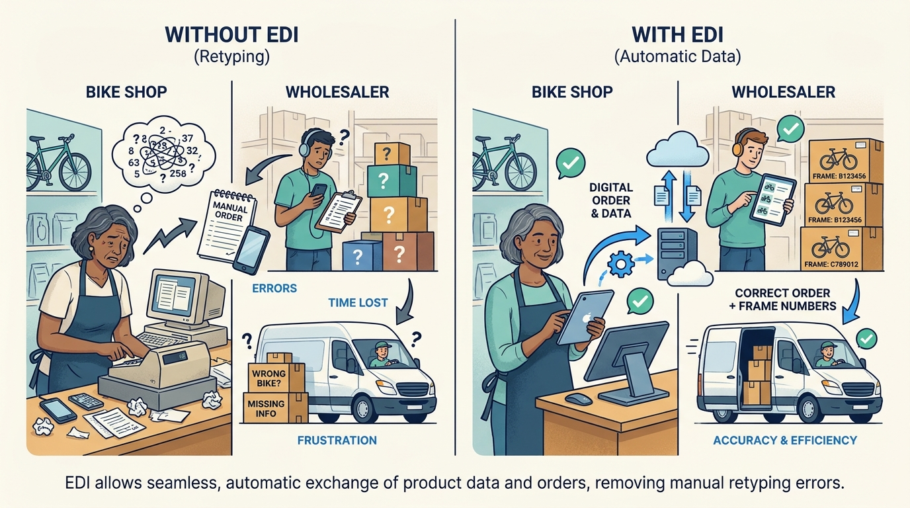
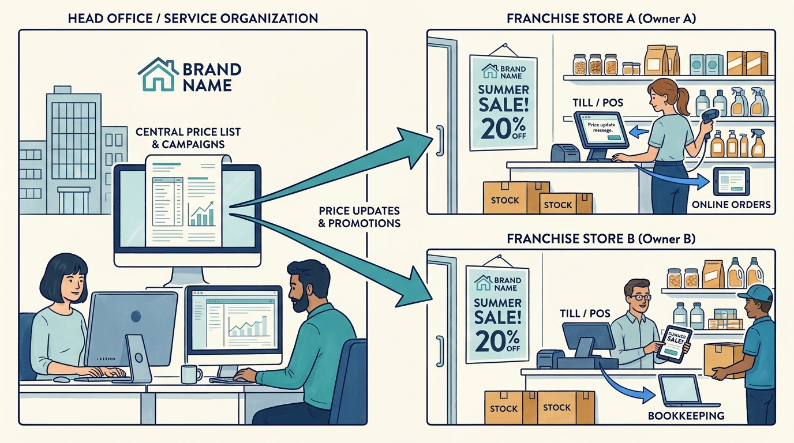

Shop owner
Buys the system, decides on prices and assortment, carries the financial risk.
What matters to them
Margin, stock tied up in money, time spent on admin, and not being let down on a busy Saturday.
A beginner's guide
Who this is for
A curious adult coming from a different field, with no assumed knowledge of retail or software.
What this guide covers
Covers the software that independent specialty shops, small chains and franchise formulas in the Netherlands and Belgium use to sell at the counter, manage stock, buy from suppliers, sell online and keep their books. Examples come from Vendit, one Dutch vendor that belongs to the Katapull software group. Restaurants, supermarkets and large department-store systems are left out.
01
Explain what a modern till system does beyond taking money.
Describe why stock accuracy matters for both the shop floor and the webshop.
Distinguish selling, stock, purchasing and reporting as separate but linked activities.
Explain why specialty branches such as bike shops need features general shops do not.
Name the main trade-offs a shop owner faces when choosing and switching systems.
02
A retail point-of-sale (POS) and store management system is the software behind the till in a shop. It records each sale, but it also keeps the list of everything the shop sells, how many of each item are on the shelves, what they cost to buy, which customers are regulars, and what the day's numbers look like.
In a specialty shop - a bike shop, jeweller, outdoor store or hobby shop - the same system often also runs the repair workshop, the webshop and the orders sent to suppliers.
Small shops compete with large online sellers on advice and service, not on scale. If the shop says "sold out" while the item sits in the back room, or the webshop sells something that is no longer there, it loses exactly the trust it depends on. The till system is where the shop's information either stays correct or quietly goes wrong.
03
Buys the system, decides on prices and assortment, carries the financial risk.
What matters to them
Margin, stock tied up in money, time spent on admin, and not being let down on a busy Saturday.
Advises customers and works the till.
What matters to them
A quick, error-free checkout and being able to tell a customer whether an item can be had.
Repairs bikes, jewellery or devices that customers bring in.
What matters to them
A clear plan, parts in stock, and customers who know when to come back.
Sets prices, campaigns and joint purchasing for many shops.
What matters to them
That every shop executes the formula consistently.
Delivers goods and product data.
What matters to them
Receiving correct orders electronically and having its products described correctly in shops.
Buys in store, on the webshop or on a marketplace.
What matters to them
Availability, advice and easy service - they rarely know which software is behind it.
Builds, installs and supports the system, often including hardware.
What matters to them
Shops that stay for years and grow into more modules.
04
The place and software where a sale is registered and paid.

It is the most frequent and time-critical moment in the shop; everything else depends on it being recorded correctly.
Click the image to open it in a new tab.For example
Scanning a bike lock, applying a 10% loyalty discount and taking a card payment.
Why it matters
It is the most frequent and time-critical moment in the shop; everything else depends on it being recorded correctly.
The shop's list of every item it can sell, with barcode, price, supplier and description.

The till, the webshop and the marketplaces all read from it; one mistake appears everywhere.
Click the image to open it in a new tab.For example
A helmet in three sizes is one article with three variants, each with its own barcode.
Why it matters
The till, the webshop and the marketplaces all read from it; one mistake appears everywhere.
The running record of how many of each item are where, changed by every sale, delivery, return and correction.

Real-time stock is what lets a shop avoid saying "no" while the item is somewhere in the business.
Click the image to open it in a new tab.For example
Selling one helmet in the Haarlem store lowers Haarlem stock by one and the webshop shows one fewer.
Why it matters
Real-time stock is what lets a shop avoid saying "no" while the item is somewhere in the business.
The difference between what an item sells for and what it cost to buy, after discounts.

Turnover can grow while margin shrinks; owners steer on margin.
Click the image to open it in a new tab.For example
A EUR 100 jacket bought for EUR 55 gives EUR 45 margin, unless it is sold with a 20% discount.
Why it matters
Turnover can grow while margin shrinks; owners steer on margin.
A rule per item saying at what stock level to reorder and up to what level.

It turns daily sales into a purchase proposal instead of relying on memory.
Click the image to open it in a new tab.For example
Inner tubes: reorder when fewer than 10, top up to 40.
Why it matters
It turns daily sales into a purchase proposal instead of relying on memory.
Selling through several channels (shop, own webshop, marketplaces) from one stock and one customer view.

Without shared stock, channels oversell each other and customers receive cancellations.
Click the image to open it in a new tab.For example
A tent listed in the shop, on the webshop and on bol, with one shared stock count.
Why it matters
Without shared stock, channels oversell each other and customers receive cancellations.
Electronic exchange of product data, orders, delivery notes and invoices between shop and supplier. EDI (electronic data interchange) is a standardised form of this.

It removes retyping, which is where many price and stock errors start.
Click the image to open it in a new tab.For example
A bike shop orders from a wholesaler inside its till system and receives frame numbers with the delivery.
Why it matters
It removes retyping, which is where many price and stock errors start.
A chain of independently owned shops operating under one brand and shared rules.

Head office needs to publish centrally while each owner runs their own shop.
Click the image to open it in a new tab.For example
Franchise stores of a household brand receiving prices and campaigns from a service organisation.
Why it matters
Head office needs to publish centrally while each owner runs their own shop.
05
A selective, Netherlands-focused view of how shop automation changed; dates are broad periods.
Electronic cash registers with barcode scanning replaced mechanical tills; small software firms began building PC-based till programs. Vendit traces its start to 1986.
What this helps explain
Sales started to become data that could update stock automatically.
PC-based systems added stock management, purchasing and links to accounting; branch associations and wholesalers started exchanging electronic product files.
What this helps explain
Specialty branches developed their own data standards and specialist vendors.
Webshops and marketplaces became normal sales channels for small shops; cloud hosting and monthly subscriptions replaced one-off licences.
What this helps explain
Stock had to be shared across channels in near real time.
Software groups formed by combining specialised vendors. In March 2025 Vendit joined Logic4, DeliveryMatch, EffectConnect and Highbiza in the Katapull group, which later added Transus, Returnista and Picqer.
What this helps explain
Shops can connect till, marketplaces, shipping and returns from one group of vendors, but face questions about which product fits as they grow.
06
Fictional example: Anna owns a two-branch bike shop. Her associate Tom works the till, Sven runs the workshop. The shop sells in store, on its own webshop and on one marketplace. Numbers are illustrative.
Anna opens the dashboard on her phone: yesterday's turnover, margin and average receipt compared with last year.
Why this step matters
She sees that discounts ate into margin and tells Tom to stop giving ad-hoc price reductions.
Tom checks stock: none in this branch, one at the other branch. He reserves it and arranges a transfer.
Why this step matters
Real-time stock across branches turns a "no" into a sale.
A customer brings a bike with brake problems. Tom registers a repair order on the customer's name with the frame number. Sven sees it on his planning board.
Why this step matters
The repair cannot be lost, and parts used are taken from stock.
Two marketplace orders arrive in the system. Labels are printed from the till system; a returned helmet from last week is booked back into stock.
Why this step matters
Online sales share the same stock, so nothing is sold twice.
A wholesaler raised purchase prices overnight. The supplier connection updates the article data, and the system flags items whose margin is now below target.
Why this step matters
Without the connection, Anna would discover the margin loss weeks later.
Tom counts the drawer; it matches card and cash totals. The day's figures are prepared for the accountant. Overnight, the system proposes reorders based on min/max levels.
Why this step matters
The books and stock are right before the next day starts.
The outcome
The shop sold more without extra admin: the e-bike sale was saved, the repair was planned, online orders were shipped and margins were protected. Success for Anna is a calm Saturday evening; for the shopper it is getting what was promised.
07
Shops pay a monthly subscription that depends on package, number of workstations and modules; vendors such as Vendit bundle hardware, installation, data migration and support into that fee.
For example
Vendit lists its entry POS package from about EUR 119-129 per month and a webshop module from EUR 299 per month (October 2026).
Fewer lost sales from stock errors, less time on admin, better buying decisions and extra online reach.
For example
An owner who stops retyping supplier price lists frees hours each week.
Vendors earn most from shops that stay for many years and add modules. Switching is costly for shops, which gives vendors stable revenue but also a responsibility not to exploit lock-in.
For example
A shop that adds a webshop and marketplace module roughly doubles its monthly fee.
Payment, shipping, marketplace and accounting partners earn per transaction or subscription and depend on good connections with the till system.
For example
A marketplace connector charges per listing volume; a shipping platform per label.
08
Every channel changes stock at its own time, and some updates (deliveries, theft, damage) only happen when people record them.
The competing needs
Faster synchronisation costs more integration effort; slower sync risks overselling.
In practice
A marketplace sells the last tent before the shop sale reaches it, leading to a cancellation and a seller-rating penalty.
How people respond, and its limits
Real-time stock publication plus safety buffers on marketplaces; limited because buffers hide available stock.
Years of articles, customers and history must move, and staff must relearn routines during trading hours.
The competing needs
A thorough migration takes time; a fast one risks dirty data.
In practice
Customer loyalty balances missing after go-live upset regulars.
How people respond, and its limits
Vendor-run migration and training before go-live; still dependent on the quality of the old data.
Bike shops need frame numbers and workshop planning, jewellers need gemstone specs and repairs, wholesalers need invoices.
The competing needs
Specialist features add complexity for shops that do not need them.
In practice
A general cloud POS cannot order from bike wholesalers inside the till.
How people respond, and its limits
Branch modules and supplier connections switched on per shop.
A shop that becomes a chain with a large webshop needs warehouse and ERP features a POS-centred system may not have.
The competing needs
Changing to a heavier system adds cost and complexity; staying may limit growth.
In practice
A retailer with a large webshop considers a full commerce ERP.
How people respond, and its limits
Groups like Katapull offer an upgrade path to a sibling ERP; the boundaries between products must stay clear.
09
A better way to understand it
Payment is one step; most value is in stock, purchasing, customer and reporting data the till produces.
A better way to understand it
It depends on the system; some keep local data so sales can continue and sync later. Shops should check this explicitly.
A better way to understand it
Stock, prices and orders must stay synchronised continuously, or cancellations harm the shop's rating.
10
Every sale is also a data event that updates stock, margin and customer history.
Stock accuracy connects the shop floor, the webshop and the marketplaces.
Supplier connections prevent errors at the source.
Specialty shops need branch-specific features such as repairs and serial numbers.
Choosing a system is a long-term decision because switching is costly.
11
Pause and think through each situation, then open the answer.
Because online channels may receive stock changes with a delay.
The reasoning
Correct stock in the till is not enough if marketplaces or webshops are updated slowly; synchronisation speed matters.
The supplier connection updated purchase prices and the system flagged low-margin items.
The reasoning
Margin depends on purchase price; automatic supplier data makes the change visible immediately.
It must publish prices and campaigns to many independently owned shops and compare them.
The reasoning
Central control and consistent execution across shops is a different job from running one shop.
12
What happens at your till when the internet connection drops?
How long does it take for a sale in the shop to show on your webshop and marketplaces?
Which suppliers send you product data electronically, and which do you type in?
What would make you switch systems, and what stops you?
13
A vendor description of a complete till offer including hardware, migration and support.
Explains real-time stock and min/max replenishment in shop language.
Shows how specialised commerce software vendors combine into one group.